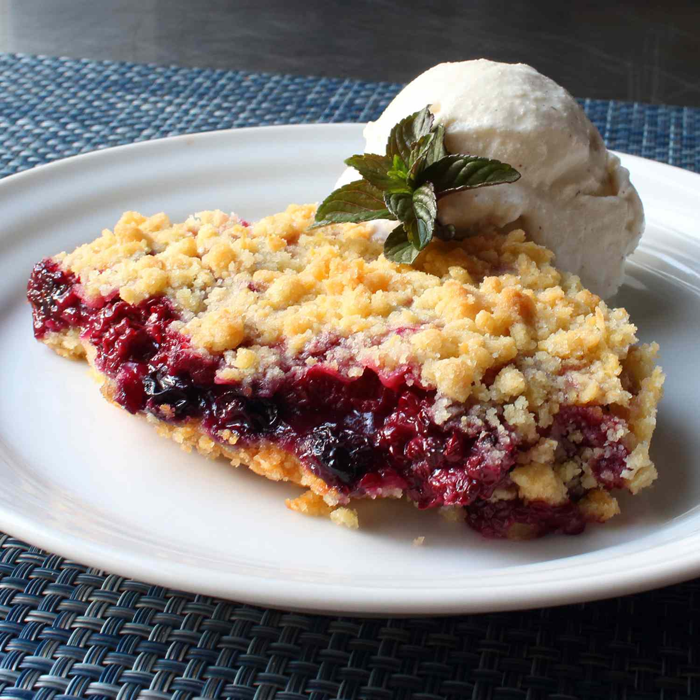

Crumble

Description
This cherry crumble recipe is delicious served warm with vanilla ice cream.
Ingredients
- 6 tablespoons butter
- 1 1/8 cups all-purpose flour
- 1/2 cup rolled oats
- 6 tablespoons packed brown sugar
- 1/8 teaspoon salt
- 1 (21 ounce) can cherry pie filling
Steps
- Preheat the oven to 375 degrees F (190 degrees C).
- Melt butter in a large saucepan over medium heat. Remove from heat, then stir in flour, oats, brown sugar, and salt until mixture resembles dry crumbs. Press about 2/3 of the crumbs evenly into the bottom of a 9-inch square pan. Top with cherry pie filling and sprinkle with remaining crumb mixture.
- Bake in the preheated oven until the top is lightly browned, 40 to 45 minutes. Serve warm or at room temperature.